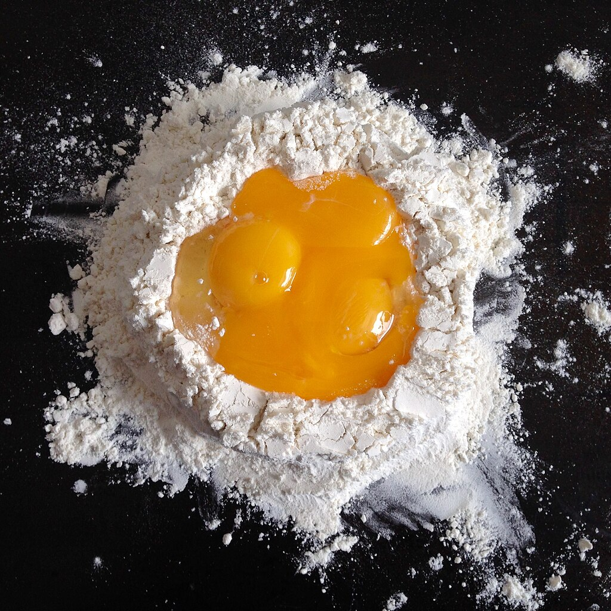
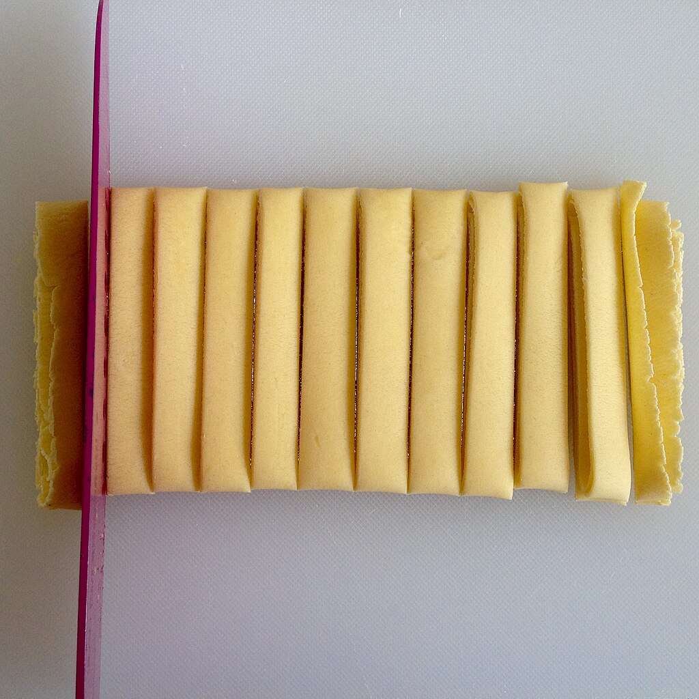

Homemade Pasta
← Back to Home
Ingredients
Ingredient
Quantity
Flour
1 cup or 120 grams + extra for rolling the dough
Eggs
1 whole egg and 1 yolk
Instructions
Prepare work surface
Measure out flour
Add flour to work surface
Create a well in the middle of the flour
Add eggs
Mix the eggs
Slowly incorporate the flour into the eggs
If the dough is too wet add more flour
Knead the dough until it bounces back when poked
Let the dough rest for at least 10 minutes covered with plastic wrap
Roll out the dough
Fold the dough, sprinkling with flour so it doesn't stick to itself
Cut the dough into strips
Boil the pasta in salted water for 2-3 minutes
 